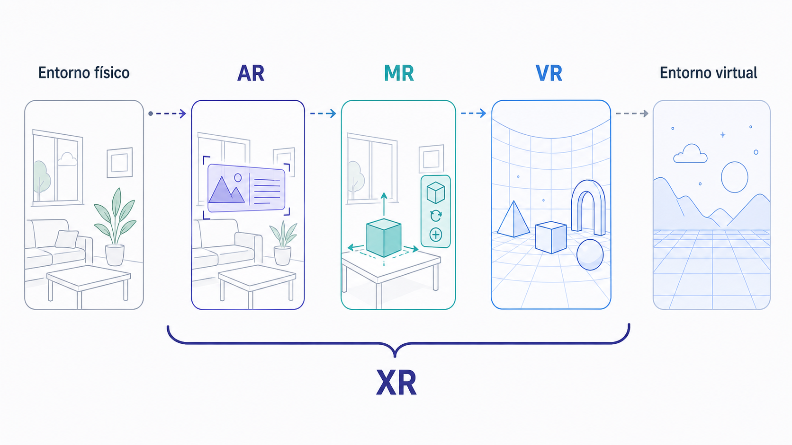
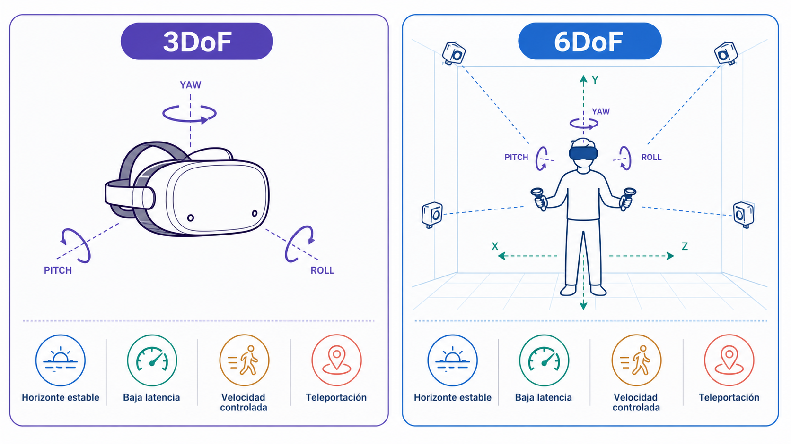
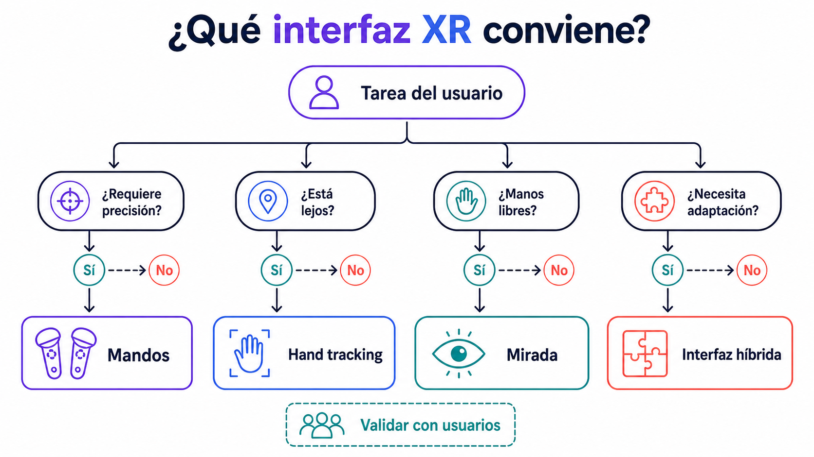
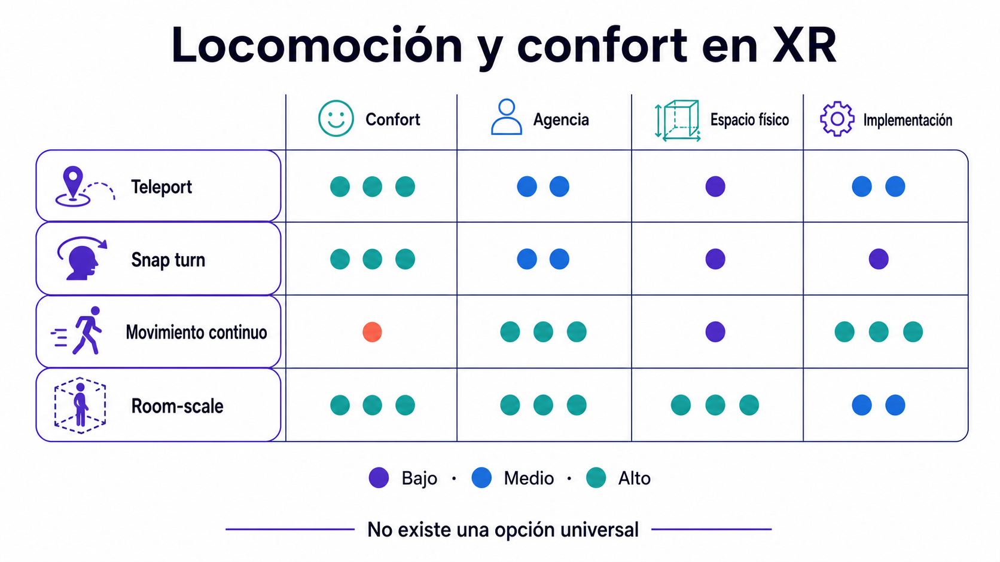

Mapa conceptual de tecnologías inmersivas, sus modos de tracking, sus interfaces y sus límites de confort.
Objetivos de aprendizaje
Distinguir con precisión VR, AR, MR y XR.
Comprender 3DoF y 6DoF, seguimiento de manos, gaze y a escala de habitación.
Reconocer la cinetosis y los principios básicos de accesibilidad en XR.
Conceptos clave
VR / AR / MR / XR3DoF y 6DoFHead-mounted displayMandosHand trackingGaze interactionRoom-scaleCinetosisAccesibilidad XR
Introducción
Esta tercera clase introduce el mapa conceptual de las tecnologías inmersivas contemporáneas: VR, AR, MR y XR. El objetivo es comprender sus diferencias, sus modos de tracking, sus interfaces principales y sus limitaciones técnicas, corporales y éticas. La clase no se centra solo en nombrar dispositivos, sino en entender cómo cada tecnología condiciona el tipo de experiencia que podemos diseñar. Una experiencia de realidad virtual cerrada no plantea los mismos problemas que una aplicación de realidad aumentada sobre móvil, ni una experiencia de realidad mixta con passthrough, ni un entorno XR con tracking de manos. Se estudiarán conceptos como HMD, 3DoF, 6DoF, mandos, seguimiento de manos, gaze interaction, a escala de habitación, cinetosis y accesibilidad XR, fundamentales para tomar decisiones técnicas y de diseño en los laboratorios de Unity.
Conceptos en detalle
VR — Realidad virtual
Sustituye visualmente el entorno físico por un entorno digital generado por ordenador. El usuario suele utilizar un HMD que cubre su campo de visión y lo sitúa dentro de una escena virtual. Al no ver el espacio físico, el diseño debe cuidar especialmente escala, punto de inicio, locomoción, confort, interacción, seguridad física y correspondencia entre movimiento real y virtual.
El usuario se coloca un visor y entra en una sala virtual donde puede caminar, mirar alrededor, agarrar objetos y activar mecanismos.
AR — Realidad aumentada
Superpone elementos digitales sobre el mundo físico. El usuario sigue viendo el entorno real, normalmente a través de la cámara de un móvil, una tableta o unas gafas. El espacio físico no desaparece: se convierte en parte de la experiencia.
Colocar objetos virtuales sobre una mesa.
Añadir información a una obra o edificio.
Visualizar datos en el espacio.
Crear juegos situados.
Diseñar experiencias educativas o museográficas.
Probar objetos a escala real.
MR — Realidad mixta
Integra de forma más compleja el mundo físico y el digital: los objetos virtuales pueden situarse dentro del espacio real, ocultarse detrás de elementos físicos, responder al entorno o adaptarse a la geometría del lugar.
Un objeto virtual aparece apoyado sobre una mesa real, reconoce los límites del espacio y se comporta como si formara parte de la habitación.
XR — Realidad extendida
Término paraguas que agrupa VR, AR y MR. No describe una tecnología única, sino un campo amplio de prácticas, experiencias e interfaces que mezclan entornos físicos, digitales y virtuales.
XR = VR + AR + MR + otros sistemas inmersivos o espaciales.
HMD — Head-Mounted Display
Dispositivo de visualización montado sobre la cabeza: casco de realidad virtual, gafas de realidad mixta o visor con passthrough.
Campo de visión
Resolución
Peso
Comodidad
Duración de uso
Tipo de tracking
Tipo de interacción
Público posible
3DoF — Tres grados de libertad
El sistema detecta la rotación de la cabeza, pero no la posición del usuario en el espacio. Permite rotar a izquierda/derecha, mirar arriba/abajo e inclinar la cabeza, pero no caminar, agacharse, mover la cabeza lateralmente ni acercarse a un objeto. Puede funcionar para vídeo 360º o experiencias contemplativas, pero limita la presencia corporal.
6DoF — Seis grados de libertad
El sistema detecta rotación y posición. Permite mirar alrededor, caminar dentro del área física, agacharse, acercarse a objetos, mover la cabeza lateralmente e interactuar a escala corporal. Es fundamental para experiencias VR contemporáneas porque habilita una relación más corporal con el espacio.
Mandos
Controladores XR que permiten interactuar con el entorno mediante botones, gatillos, joysticks, vibración y tracking espacial. Su ventaja principal es la precisión; su límite es que no siempre resultan naturales para todos los usuarios.
Apuntar
Agarrar
Lanzar
Activar
Teletransportarse
Manipular objetos
Navegar por menús
Hand tracking
Detecta las manos del usuario sin mandos físicos mediante cámaras o sensores. Permite una interacción más corporal e intuitiva, pero puede fallar con poca luz, perder tracking si las manos se ocultan, no ofrecer respuesta háptico fuerte, dificultar gestos complejos y cansar si exige mantener los brazos levantados.
Gaze interaction
Utiliza la mirada como sistema de selección o puntero. Puede combinarse con permanencia de la mirada, parpadeo, pinch, botón, voz o gestos. Es útil cuando no hay mandos o se busca interacción mínima, pero puede ser problemática si todo lo que el usuario mira se interpreta como intención de actuar.
Room-scale
El usuario puede moverse físicamente dentro de una zona real y ese movimiento se refleja en el entorno virtual. Implica diseñar un área segura, escala adecuada, límites claros, objetos a distancia cómoda, prevención de choques y alternativas para usuarios sentados.
Cinetosis
Mareo en VR producido por el conflicto entre lo que el usuario ve y lo que su cuerpo siente (por ejemplo, si la cámara se mueve virtualmente pero el cuerpo está quieto). Puede producir mareo, náuseas, desorientación, fatiga visual, dolor de cabeza y pérdida de equilibrio. El diseño de locomoción, cámara y framerate es esencial para reducirla.
Accesibilidad XR
Diseñar experiencias que puedan ser usadas por personas con diferentes capacidades físicas, sensoriales, cognitivas o contextuales. Incluye modo sentado y de pie, opciones de locomoción, subtítulos, contraste adecuado, escala ajustable, interfaces legibles, evitar gestos exigentes, avisos de confort, pausas y compatibilidad con distintos dispositivos. No debe añadirse al final: debe formar parte del diseño desde el principio.
VR, AR, MR y XR no son sinónimos
Aunque en muchos contextos se usan de forma confusa, VR, AR y MR designan experiencias diferentes.
VR crea un entorno digital que sustituye visualmente el mundo físico. Pregunta central: ¿qué mundo virtual va a habitar el usuario?
AR añade elementos digitales al mundo físico. Pregunta central: ¿qué capa digital se añade al espacio real?
MR busca una integración más profunda entre lo físico y lo digital. Pregunta central: ¿cómo interactúan los objetos digitales con el espacio físico?
XR funciona como categoría amplia. Pregunta central: ¿qué combinación de realidad física, digital y virtual propone la experiencia?

Figura 2.1 — Continuo entre entorno físico, realidad aumentada, mixta y virtual.
Cada tecnología produce una relación distinta con el espacio
La elección entre VR, AR y MR no es solo técnica: es una decisión conceptual.
En VR el diseñador controla casi todo (mundo visual, iluminación, escala, sonido, objetos, recorrido, reglas de interacción), pero también debe cuidar cinetosis, seguridad, aislamiento del entorno físico, duración y comodidad.
En AR el diseñador controla menos, porque el entorno físico pertenece al usuario. Hay que considerar luz real, superficies disponibles, tamaño de habitación, calidad de tracking, cámara del dispositivo, distracciones y contexto de uso.
En MR el diseñador debe pensar la relación entre ambos espacios: mapeo del entorno, oclusión, passthrough, interacciones híbridas, objetos digitales situados y seguridad física y cognitiva.
3DoF y 6DoF cambian el tipo de experiencia posible
El tracking define qué puede hacer el usuario con su cuerpo.
3DoF: el usuario puede mirar alrededor, pero no acercarse físicamente a los objetos. Suficiente para vídeo 360º, experiencias contemplativas, narrativas guiadas, visualización esférica o contenidos pasivos.
6DoF: el usuario puede moverse dentro de la escena. Permite agacharse, rodear objetos, mirar desde distintos ángulos, interactuar con distancia corporal, sentir escala y usar el cuerpo como interfaz.
En diseño inmersivo, el paso de 3DoF a 6DoF transforma profundamente el lenguaje de la obra.

Figura 2.2 — Comparación entre seguimiento 3DoF y 6DoF y criterios de confort.
Interfaces XR: mandos, manos, mirada y cuerpo
Cada modo de interacción tiene ventajas y límites.
Mandos: precisos, con botones claros, respuesta háptico y buen control en juegos; pero requieren aprendizaje, pueden romper la naturalidad y ser menos expresivos que las manos.
Hand tracking: natural, corporal, intuitivo en gestos simples; pero menor precisión, sin respuesta háptico fuerte, cansancio físico y problemas de oclusión.
Gaze interaction: simple y útil para accesibilidad; pero puede cansar, provocar selecciones accidentales y confundir mirar con actuar.
Room-scale: alta presencia, interacción corporal, escala real; pero requiere espacio físico, puede ser inseguro y necesita alternativas para modo sentado.

Figura 2.10 — Criterios para seleccionar mandos, manos, mirada o una interfaz híbrida.
Confort: una dimensión de diseño
En XR el confort no es un detalle técnico secundario, sino parte central de la experiencia. Una experiencia incómoda falla aunque sea visualmente interesante.
Factores que afectan al confort: framerate bajo, latencia, movimiento artificial de cámara, aceleraciones bruscas, rotaciones forzadas, escala incoherente, altura de cámara incorrecta, falta de referencias espaciales, interfaces demasiado cercanas, texto pequeño y sesiones demasiado largas.
La locomoción como decisión estética y ética
La locomoción define cómo se mueve el usuario en la experiencia y no es una decisión meramente técnica.
Teleportación: el usuario apunta a un punto y aparece allí. Reduce cinetosis y es cómoda para principiantes, pero puede romper continuidad espacial y resultar menos natural.
Movimiento continuo: el usuario se desplaza de forma suave con joystick. Aporta continuidad y sensación de recorrido, pero implica mayor riesgo de mareo y puede ser problemático para usuarios sensibles.
Room-scale: el usuario camina físicamente. Alta presencia y escala corporal real, pero depende del espacio disponible y no permite grandes recorridos virtuales.
Locomoción híbrida: combina varias opciones (por ejemplo, moverse físicamente en una zona pequeña y usar teleportación para desplazamientos largos). Suele ser la solución más adecuada para proyectos de clase.

Figura 2.11 — Comparación de técnicas de locomoción según confort, agencia y coste.
Tipologías
VR — Realidad virtual
Sustituye el entorno físico por uno virtual.
Dispositivo habitual: HMD VR.
Relación con el espacio físico: queda oculto.
Ejemplo de uso: videojuego VR, simulación, instalación virtual.
Preguntas de análisis
¿Qué mundo virtual va a habitar el usuario?
AR — Realidad aumentada
Añade capas digitales sobre el mundo real.
Dispositivo habitual: móvil, tableta, gafas AR.
Relación con el espacio físico: sigue visible.
Ejemplo de uso: objeto 3D sobre una mesa, guía de museo.
Preguntas de análisis
¿Qué capa digital se añade al espacio real?
MR — Realidad mixta
Integra objetos digitales y físicos.
Dispositivo habitual: visor con passthrough o sensores espaciales.
Relación con el espacio físico: mundo físico y digital se afectan.
Ejemplo de uso: objeto virtual que interactúa con una habitación.
Preguntas de análisis
¿Cómo interactúan los objetos digitales con el espacio físico?
XR — Realidad extendida
Agrupa VR, AR y MR.
Dispositivo habitual: varios.
Relación con el espacio físico: depende del caso.
Ejemplo de uso: proyecto híbrido o plataforma inmersiva.
Preguntas de análisis
¿Qué combinación de realidad física, digital y virtual propone la experiencia?
Referentes
Meta Quest 3
Meta Quest 3 permite trabajar tanto con experiencias VR como con experiencias de realidad mixta mediante passthrough. Es relevante porque representa un dispositivo autónomo, relativamente accesible, que combina tracking 6DoF, mandos, seguimiento de manos y posibilidades de MR.
Relación entre espacio físico y contenido digital.
Limitaciones de confort.
Duración de sesiones.
Seguridad en a escala de habitación.
¿Qué tipo de proyecto del curso tendría sentido en Quest?
¿Conviene diseñar para VR completa o para MR?
¿Qué interacciones serían más naturales con mandos?
¿Qué interacciones serían mejores con manos?
¿Cómo se comunicarían los límites del espacio físico?
Apple Vision Pro
Apple Vision Pro desplaza el centro de interacción hacia un modelo donde la mirada y el gesto de los dedos tienen un papel muy importante. Permite analizar cómo cambia el diseño cuando el usuario no depende de mandos físicos visibles.
Gaze interaction.
Gestos mínimos.
Interfaces espaciales.
Ventanas y objetos digitales en el entorno.
Confort visual.
Relación entre productividad, entretenimiento e inmersión.
¿Qué cambia cuando la mirada funciona como puntero?
¿La interacción se vuelve más natural o más invisible?
¿Qué riesgos tiene depender demasiado de la mirada?
¿Cómo se diseñan interfaces legibles en el espacio?
¿Qué diferencia hay entre una app espacial y una experiencia inmersiva?
Half-Life: Alyx
Half-Life: Alyx muestra cómo un videojuego puede diseñarse específicamente para VR. Su interacción con objetos, armas, inventario, gravedad, exploración y escala espacial está pensada para el cuerpo y las manos del usuario.
¿Qué acciones serían imposibles o menos potentes en pantalla plana?
¿Cómo se construye agencia mediante objetos manipulables?
¿Cómo se reduce la incomodidad durante la locomoción?
¿Qué papel tiene el sonido espacial?
¿Qué mecánica simple podría adaptarse a un laboratorio Unity?
Actividades
Tabla comparativa VR / AR / MR
Actividad central · 23 min · Análisis comparativo
Elegir una experiencia VR, una app AR y un proyecto MR. Completar una tabla con: experiencia, tipo, hardware, modo de interacción, contexto de uso, ventajas y limitaciones.
¿Cuál depende más del aislamiento del usuario?
¿Cuál depende más del espacio físico?
¿Cuál ofrece más agencia?
¿Cuál parece más accesible para público general?
¿Cuál sería más viable como proyecto de clase?
Análisis de grados de libertad
Actividad central · 23 min · Análisis técnico-conceptual
Buscar una experiencia 3DoF y una 6DoF. Para cada una indicar: título, tipo de experiencia, dispositivo, movimientos que reconoce, movimientos que no reconoce, tipo de presencia que genera y limitaciones.
¿Qué pierde una experiencia 3DoF frente a una 6DoF?
¿En qué casos 3DoF puede ser suficiente?
¿Qué nuevas posibilidades aparecen con 6DoF?
¿Qué problemas de confort aparecen con 6DoF?
¿Cómo afecta el tracking al lenguaje de la experiencia?
Actividades de ampliación opcional · fuera de la sesión
Mapa de interfaces XR
Ampliación opcional · 20 min · Mapa conceptual
Crear un mapa que relacione mandos, seguimiento de manos, gaze interaction, a escala de habitación, voz y pantalla táctil. Para cada uno indicar acciones que permite, ventajas, limitaciones, tipo de proyecto donde sería útil y riesgos de accesibilidad.
Diagnóstico de confort
Ampliación opcional · 20 min · Análisis crítico
Imaginar una experiencia VR de 10 minutos en la que el usuario explora una sala y activa objetos. Detectar al menos cinco posibles problemas de confort, indicando para cada uno problema, causa y solución.
Movimiento demasiado rápido.
Rotación brusca.
Texto demasiado cerca de la cámara.
Audio muy fuerte.
Objetos fuera del alcance.
Falta de opción sentado.
Escala incorrecta.
Falta de pausa.
Framerate bajo.
Investigación aplicada
Ampliación opcional · fuera de la sesión
Investigar principios básicos de confort en VR y resumirlos en una página. Servirá como apoyo para los laboratorios y el proyecto final.
¿Qué locomoción sería más adecuada para usuarios principiantes?
¿Qué decisiones reducen la cinetosis?
¿Qué elementos pueden generar fatiga visual?
¿Qué opciones de accesibilidad debería tener tu proyecto?
¿Qué principio aplicarás en el Laboratorio 2 o en tu prototipo?
Conexión con Unity
Diseñar conceptualmente una pequeña experiencia XR y decidir su tecnología, como puente entre la teoría y los Laboratorios 1 y 4.